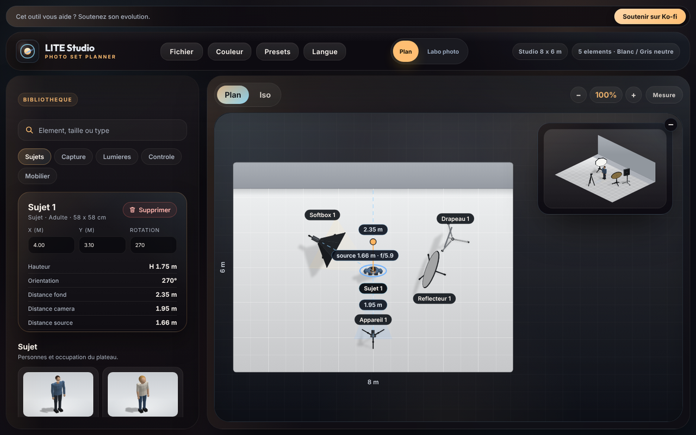

Esquema de iluminación
Cómo preparar un esquema de iluminación de retrato simple, limpio y fácil de ejecutar.
Un buen esquema de retrato no se limita a una idea bonita de luz. También debe indicar dónde colocar la fuente principal, el fill, la cámara, el sujeto y las herramientas de control para que el equipo monte el set con seguridad.
Luz principalColoca una fuente grande a 45 grados para un resultado suave y versátil.
Fill y contrasteAñade un reflector o negative fill según la densidad deseada.
Plano de estudioMuestra distancias y ejes para evitar aproximaciones al montar.
ImpresiónComparte la vista superior como lighting diagram útil.
